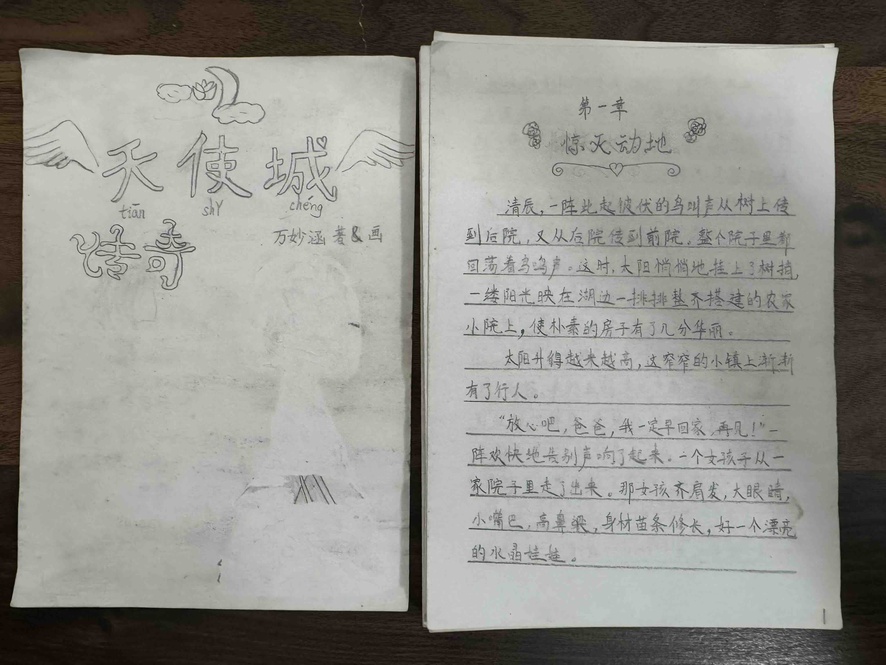
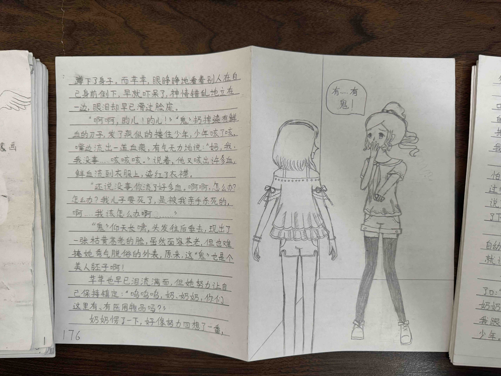
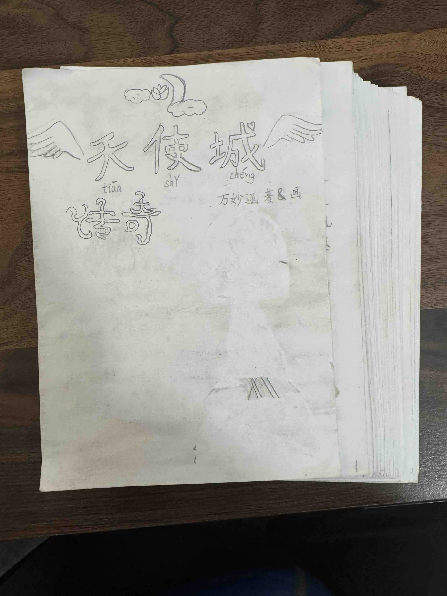

I started writing my first novel when I was ten years old. What began as a few pages of imagination slowly became the thread that ran through my entire childhood and teenage years.
Even though the book isn't finished yet, it carries my deepest love for language, storytelling, and the way words can build entire worlds from nothing.
For me, writing is more than a hobby - it's a form of translation between my mind and the world. I've always believed that ideas deserve both structure and soul. I can speak through the precision of machine language when I code, but I can also speak through the rhythm of human emotion when I write. Each sentence I craft reminds me that creativity and logic are not opposites; they're two languages that express the same thought in different ways.
This novel has taught me persistence, reflection, and emotional patience. Every chapter has grown with me - its voice maturing as mine did. I don't write for praise or perfection; I write because it's how I understand the world and myself. In many ways, the story isn't just about the characters I've created. It's about the quiet journey of learning to think, to feel, and to keep creating no matter how long it takes.



Book Name: Angel City
Thirteen-year-old Ling'an is a bright and courageous girl raised by her single father in a quiet lakeside town. Her two best friends, the cheerful Tian Yue and the brilliant An Che, have grown up with her, bound by a childhood promise to go on a great adventure together.
But life changes abruptly when Ling'an's father remarries Zhou Cangling, and painful memories of her mother's mysterious disappearance eight years ago begin to resurface.
One stormy night, the three friends discover a bronze diary titled Angel City, hidden inside an old desk. When Ling'an's necklace unlocks it, ancient words and visions burst out like a movie, revealing a forgotten world. A dark force pulls Ling'an and Tian Yue into the diary - into a lost kingdom called Yingxia.
In this strange land, Ling'an meets kind villagers and witnesses their suffering. Determined to change their fate, she joins forces with Tian Yue, the lonely Grandma Chen, the brave boy Long Yun, and the proud yet timid princess Kaya. Together, they uncover the truth: the chaos threatening Yingxia is not caused by the blind king, but by someone far closer to him.
After a long struggle, the two girls help restore peace to the kingdom. Ling'an is finally reunited with her long-lost mother, Chen Xi, only to learn that saving history requires sacrifice. To free her mother and cleanse the cursed Ghost City, Ling'an shatters the ruby key - destroying the evil realm once and for all.
When the dust settles, the diary Angel City closes its final chapter, now transformed into a symbol of memory and courage. Returning home, Ling'an learns to accept her new family and cherish every moment of peace. On the diary's last page, it reads:
"The Ghost City has fallen. Angel City shall forever guard the names of those who saved it."